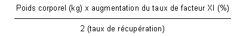
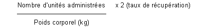

RÉSUMÉ DES CARACTÉRISTIQUES DU PRODUIT
ANSM - Mis à jour le : 12/07/2011
HEMOLEVEN 1000 U/10 ml, poudre et solvant pour solution injectable
2. COMPOSITION QUALITATIVE ET QUANTITATIVE
Facteur XI de coagulation humain ....................................................................................................... 1000 U
Pour 10 ml de solution reconstituée.
Pour la liste complète des excipients, voir rubrique 6.1.
Poudre et solvant pour solution injectable.
4.1. Indications thérapeutiques
Le facteur XI de coagulation humain est destiné au traitement des patients présentant un déficit congénital sévère en facteur XI de la coagulation.
· Soit à titre curatif: en cas d'accident hémorragique survenant chez un malade déjà connu ou chez lequel le déficit vient d'être révélé par un bilan d'hémostase,
· soit à titre préventif: en cas d'intervention chirurgicale majeure, en particulier lorsqu'une surcharge volémique ne peut être tolérée par le patient, ce qui contre-indique l'utilisation de plasma frais congelé viro-inactivé S/D.
4.2. Posologie et mode d'administration
Posologie
Important: la dose et la fréquence des injections d'HEMOLEVEN seront toujours adaptées à chaque cas individuel (poids, sévérité du déficit, circonstances cliniques) en fonction de l'efficacité clinique observée et du taux de facteur XI atteint dans la circulation.
En règle générale, l'administration d'une unité (U) de facteur XI humain par kg de poids corporel fait augmenter le taux plasmatique de facteur XI d'environ 1,5 à 2,5 % (1,5 à 2,5 U/dl). Les formules suivantes permettent de déterminer la dose nécessaire (en U) à l'obtention d'une réponse donnée ou la réponse à attendre après une dose administrée, pour un taux de récupération de 2%.
1. Dose nécessaire (en unités):

2. Augmentation attendue du taux de facteur XI:

La posologie est calculée de façon à obtenir un taux de facteur XI d'environ 30 à 40 % (0,3 à 0,4 U/ml de plasma).
Le facteur XI humain ne doit pas être utilisé à une posologie supérieure à 30 U de facteur XI/kg de poids corporel.
Si les taux plasmatiques de facteur XI souhaités ne sont pas atteints ou si l'hémorragie persiste après administration d'une dose calculée selon la formule ci-dessus, il convient de faire, après un délai de 12 à 24 heures après la dernière injection, une injection complémentaire de 10 U/kg tout en surveillant, avec une attention particulière, les marqueurs d'activation de la coagulation (évolution clinique, taux de facteur V, de fibrinogène, de plaquettes, D-dimères...).
Le traitement est habituellement renouvelé toutes les 48 heures, en raison de la longue demi-vie d'HEMOLEVEN (30 à 60 heures) et en tenant compte du taux résiduel de facteur XI.
Le traitement substitutif des déficits congénitaux en facteur XI doit être pris en charge et surveillé régulièrement par un spécialiste de l'hémostase, en particulier pour rechercher d'éventuels signes cliniques et/ou biologiques de CIVD.
Mode d'administration
HEMOLEVEN se présente sous forme d'une poudre à reconstituer extemporanément avec de l'eau pour préparations injectables selon les modalités décrites dans la rubrique 6.6.
HEMOLEVEN doit être exclusivement injecté par voie intraveineuse, en une seule fois, immédiatement après reconstitution, sans dépasser 4 ml/minute.
La solution est claire ou légèrement opalescente. Ne pas utiliser de solution trouble ou contenant un dépôt.
Allergie connue à l'un des constituants de la préparation.
Hypersensibilité à l'héparine ou à ses dérivés incluant les HBPM.
Antécédent de thrombopénie induite par l'héparine (ou TIH) grave de type II.
4.4. Mises en garde spéciales et précautions d'emploi
Le traitement substitutif du déficit en facteur XI doit être pris en charge et surveillé régulièrement par un spécialiste de l'hémostase, en particulier pour l'apparition d'un inhibiteur.
Les formules proposées plus haut pour le calcul de la posologie permettent d'estimer la dose nécessaire, mais il est fortement recommandé de pratiquer les examens biologiques appropriés à intervalles réguliers, afin de vérifier que le taux plasmatique souhaité de facteur XI a été atteint.
Ce médicament contient de l'héparine et peut provoquer des réactions allergiques, des thrombopénies immunoallergiques graves de type II (TIH) et des troubles de la coagulation.
HEMOLEVEN contient du sodium et du potassium:
· Ce médicament contient environ 4,8 mg de sodium par ml de produit (48 mg de sodium par flacon de 10 ml). A prendre en compte chez les patients suivant un régime hyposodé strict.
· Ce médicament contient du potassium. Le taux de potassium est inférieur à 1 mmol par dose administrée, c'est à dire «sans potassium».
L'administration d'HEMOLEVEN peut provoquer la survenue de réactions allergiques. Les malades doivent être informés des signes des réactions d'hypersensibilité tels que œdème, urticaire, urticaire généralisée, oppression thoracique, respiration sifflante, hypotension et anaphylaxie. Dans ce cas, l'administration doit être interrompue immédiatement. En cas de choc anaphylactique, le traitement symptomatique de l'état de choc devra être instauré.
En cas de posologie élevée, lors d'une intervention chirurgicale majeure tout particulièrement, faire instaurer une surveillance biologique stricte, par un laboratoire d'hémostase spécialisé, à la recherche des premiers signes d'une éventuelle coagulation intravasculaire disséminée. La prévention des complications thrombo-emboliques doit être effectuée selon les recommandations en usage.
Le risque thrombogène est accru chez la femme enceinte.
Ne pas dépasser la dose recommandée de 30 U/kg étant donné le risque de CIVD et(ou) d'accident thrombo-embolique.
HEMOLEVEN est fabriqué à partir de plasma humain.
Les mesures habituelles de prévention du risque de transmission d'agents infectieux par les médicaments préparés à partir de sang ou de plasma humain comprennent la sélection clinique des donneurs, la recherche des marqueurs spécifiques d'infection sur chaque don et sur les mélanges de plasma ainsi que la mise en œuvre dans le procédé de fabrication d'étapes efficaces pour l'inactivation/élimination virale. Cependant, lorsque des médicaments préparés à partir de sang ou de plasma humain sont administrés, le risque de transmission d'agents infectieux ne peut pas être totalement exclu. Ceci s'applique également aux virus inconnus ou émergents ou autres types d'agents infectieux.
Les mesures prises sont considérées comme efficaces vis-à-vis des virus enveloppés tels que le VIH, le VHB et le VHC.
Les mesures prises peuvent être d'efficacité limitée vis-à-vis des virus non-enveloppés tels que le VHA et le parvovirus B19. L'infection par le parvovirus B19 peut être sévère chez le fœtus et chez les personnes atteintes de certains types d'anémies ou d'un déficit immunitaire.
Une vaccination appropriée (hépatites A et B) des patients recevant des facteurs de coagulation est recommandée.
4.5. Interactions avec d'autres médicaments et autres formes d'interactions
Aucune interaction médicamenteuse avec le facteur XI humain n'est connue à ce jour.
L'innocuité d'HEMOLEVEN chez la femme enceinte n'a pas été évaluée par des essais cliniques contrôlés.
L'expérimentation animale est insuffisante pour établir la sécurité vis-à-vis de la reproduction, du déroulement de la grossesse, du développement de l'embryon ou du fœtus et du développement péri- et postnatal. Par conséquent, et compte tenu de l'augmentation du risque thromboembolique pendant la grossesse, HEMOLEVEN ne doit être prescrit qu'en cas de nécessité absolue au cours de la grossesse et de l'allaitement.
4.7. Effets sur l'aptitude à conduire des véhicules et à utiliser des machines
Rien ne suggère que le facteur XI humain diminue l'aptitude à conduire des véhicules ou à utiliser des machines.
Des cas de réactions aiguës d'hypersensibilité telles qu'une éruption généralisée ou un œdème de Quincke ont été rapportés. Bien que non décrites à ce jour, des réactions de type anaphylactique plus sévères pourraient survenir (cf rubrique 4.4).
L'apparition d'inhibiteur du facteur XI peut exceptionnellement survenir chez certains patients et obliger à modifier l'attitude thérapeutique.
Des manifestations thrombotiques ont été observées chez certains patients avec traduction clinique telles qu'une embolie pulmonaire ou une coagulation intra-vasculaire disséminée (CIVD) ou biologique telles qu'une augmentation des D-dimères.
Des complications thrombo-emboliques ont été décrites dans la littérature à l'occasion d'interventions chirurgicales et de substitution par du facteur XI humain (HEMOLEVEN). Néanmoins, les doses administrées dépassaient toujours 30 U/kg et/ou le délai entre deux administrations était toujours trop court. En cas de surdosage, rechercher des signes de CIVD (temps de QUICK, fibrinogène, numération des plaquettes,...) ou de complications thrombo-emboliques.
5. PROPRIETES PHARMACOLOGIQUES
5.1. Propriétés pharmacodynamiques
ANTIHEMORRAGIQUES - FACTEURS DE LA COAGULATION SANGUINE (FACTEUR XI DE COAGULATION, Code ATC: B02BD).
Le facteur XI contenu dans cette préparation est un constituant normal du plasma humain et il se comporte comme le facteur XI endogène.
L'activation de la phase contact est déclenchée au contact de surfaces chargées négativement. Elle est initiée par l'activation du facteur XII en présence du kininogène de haut poids moléculaire et de la prékallicréine. Le facteur XII active la prékallicréine qui active elle-même de manière réciproque le facteur XII amplifiant ainsi l'activation des réactions de coagulation.
Le facteur XII activé transforme le facteur XI en facteur XI activé, capable d'activer le facteur IX. Une cascade de réactions d'activation est ainsi déclenchée aboutissant à la formation du caillot de fibrine.
5.2. Propriétés pharmacocinétiques
Le pic plasmatique du facteur XI humain est le plus souvent observé entre 30 et 60 minutes après l'injection.
La récupération obtenue avec HEMOLEVEN est d'environ 1,5 à 2,5 % par U/kg injectée: l'injection de 1 U/kg de facteur XI humain augmente le taux plasmatique de 2% en moyenne (2 U/dl).
La demi-vie d'HEMOLEVEN est d'environ 48 heures (30 à 60 heures).
L'activité d'HEMOLEVEN décroît de manière exponentielle en deux phases successives.
5.3. Données de sécurité préclinique
L'analyse du profil protéique montre la présence de contaminants: traces de fibronectine, immunoglobuline G et alpha-2-macroglobuline. Le fibrinogène et l'albumine sont indétectables. Il en est de même pour les autres facteurs de coagulation, les composants du système kinine et les protéases correspondantes.
La thrombogénicité potentielle a été étudiée par des tests in-vitro chez l'animal. Selon le test utilisé (Wessler ou dans un modèle de non-stase veineuse), la dose thrombogène 50 est 2,5 à 10 fois supérieure à celle des témoins positifs type complexe prothrombique activé.
Il n'a pas été effectué d'essais de toxicité réitérée, ni de reproduction chez l'animal.
Les données précliniques ne laissent supposer aucune potentialité mutagène d'HEMOLEVEN.
Poudre: héparine sodique, antithrombine humaine, inhibiteur de la C1 Estérase, chlorure de sodium, chlorhydrate de lysine, citrate de sodium, arginine, phosphate disodique dodécahydraté, phosphate monopotassique.
Solvant: eau pour préparations injectables.
Cette spécialité ne doit pas être mélangée à aucun autre produit et (ou) médicament.
Seuls les dispositifs d'injection/perfusion homologués peuvent être utilisés car l'adsorption des facteurs de coagulation dérivés du plasma humain sur les surfaces internes de certains matériels de perfusion peut être responsable de l'échec du traitement.
2 ans.
Après reconstitution, une utilisation immédiate est recommandée. Toutefois, la stabilité a été démontrée pendant 24 heures à + 25°C.
6.4. Précautions particulières de conservation
A conserver au réfrigérateur (entre +2° C et +8° C) et à l'abri de la lumière. Ne pas congeler.
6.5. Nature et contenu de l'emballage extérieur
Poudre en flacon (verre) + 10 ml de solvant en flacon (verre) avec un système de transfert et une aiguille filtre -boîte de 1.
6.6. Précautions particulières d’élimination et de manipulation
Respecter les règles d'asepsie habituelles.
Ne jamais utiliser les flacons dès la sortie du réfrigérateur.
· Amener les deux flacons (poudre et solvant) à température ambiante.
· Retirer la capsule protectrice du flacon de solvant (eau pour préparations injectables) et du flacon de poudre.
· Désinfecter la surface de chaque bouchon.
· Retirer le capuchon protecteur translucide du système de transfert et insérer à fond le biseau ainsi dégagé au centre du bouchon du flacon de solvant en opérant simultanément un mouvement de rotation.
· Retirer le deuxième capuchon protecteur de l'autre extrémité du système de transfert.
· Maintenir les deux flacons dans une position horizontale (évent vers le haut) et enfoncer rapidement l'extrémité libre du biseau au centre du bouchon du flacon de poudre.
Veiller à ce que le biseau soit toujours immergé dans le solvant pour éviter un cassage précoce du vide.
· Placer immédiatement l'ensemble dans une position verticale, flacon de solvant bien au-dessus du flacon de poudre, de façon à permettre le transfert du solvant vers la poudre.
· Pendant le transfert, diriger le jet de solvant sur toute la surface de la poudre. Veiller à ce que la totalité du solvant soit transférée.
· A la fin du transfert, le vide est automatiquement cassé (air stérile).
· Retirer le flacon vide (solvant) avec le système de transfert.
· Agiter modérément par un mouvement de rotation doux pour éviter la formation de mousse, jusqu'à dissolution complète de la poudre.
La mise en solution est généralement instantanée et doit être totale en moins de 10 minutes.
La solution obtenue est incolore ou légèrement opalescente. Ne pas utiliser de solution trouble ou contenant un dépôt.
Administration:
· Aspirer le produit dans une seringue stérile à l'aide de l'aiguille-filtre fournie.
· Retirer l'aiguille-filtre de la seringue et la remplacer par une aiguille intraveineuse ou une aiguille épicrânienne.
· Expulser l'air de la seringue et piquer la veine après désinfection.
· Injecter lentement par voie intraveineuse en une seule fois, immédiatement après reconstitution, sans dépasser un débit de 4 ml/minute.
Tout produit non utilisé ou déchet doit être éliminé conformément à la réglementation en vigueur.
7. TITULAIRE DE L’AUTORISATION DE MISE SUR LE MARCHE
LFB-BIOMEDICAMENTS
3, AVENUE DES TROPIQUES
91940 LES ULIS
8. NUMERO(S) D’AUTORISATION DE MISE SUR LE MARCHE
· 561 131-7: poudre en flacon (verre) + 10 ml de solvant en flacon (verre) avec un système de transfert et une aiguille filtre - boîte de 1.
9. DATE DE PREMIERE AUTORISATION/DE RENOUVELLEMENT DE L’AUTORISATION
[à compléter par le titulaire]
10. DATE DE MISE A JOUR DU TEXTE
[à compléter par le titulaire]
Sans objet.
12. INSTRUCTIONS POUR LA PREPARATION DES RADIOPHARMACEUTIQUES
Sans objet.
Liste I.
Médicament soumis à prescription hospitalière.